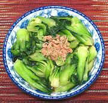

|
Green Bok Choy with Dry ShrimpChina - Zhejiang - Kai Yang Chao Cai | ||||
| Serves: Effort: Sched: DoAhead: |
4 side ** 25 min Prep |
A simple, easy to make stir fry with good flavor - a fine side dish for Asian or Western menus. It can also serve, with rice, as a light vegetable main course for two. The photo example is garnished with a few Papery Dried Shrimp. | |||
|
1 ------- 3 1/3 1-1/2 1/3 ------- 1/2 1/2 ------- 2 |
# --- T c T t --- t T --- T |
Green Bok Choy (1) -- Sauce Dried Shrimp (2) Stock Rice Wine (3) Salt -- Glaze (opt) Potato Starch (4) Water ------------ Oil |
Prep - (15 min)
|